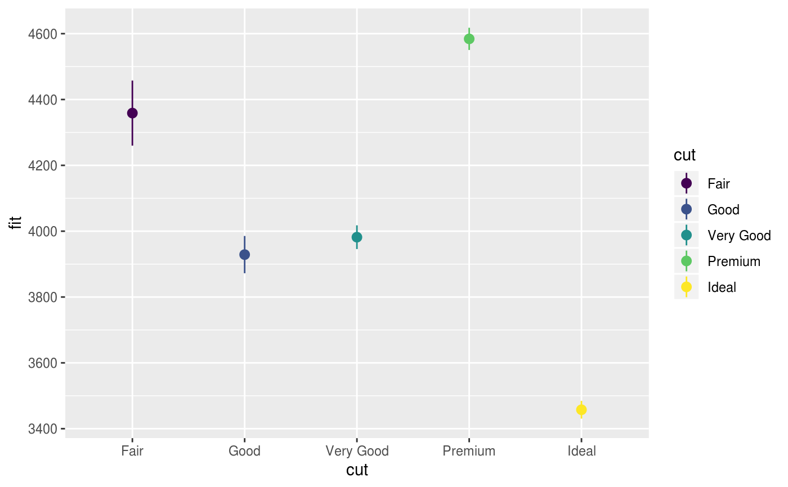
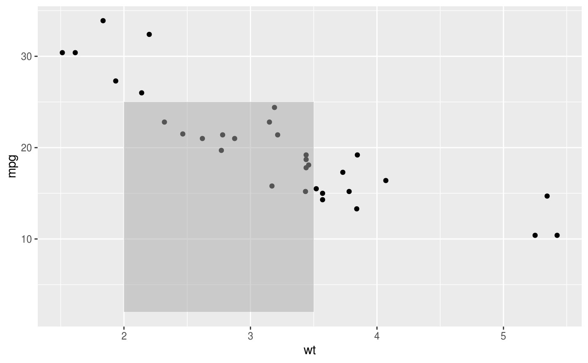
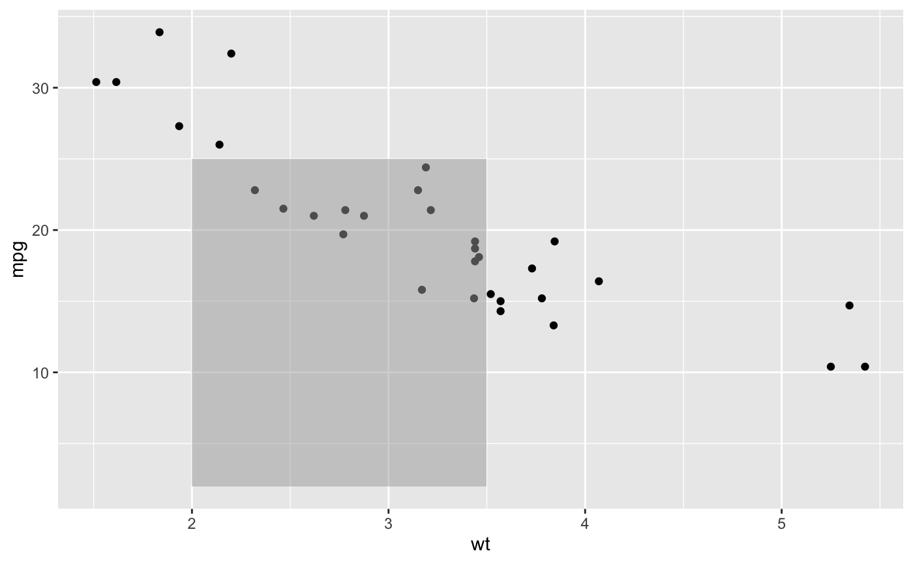
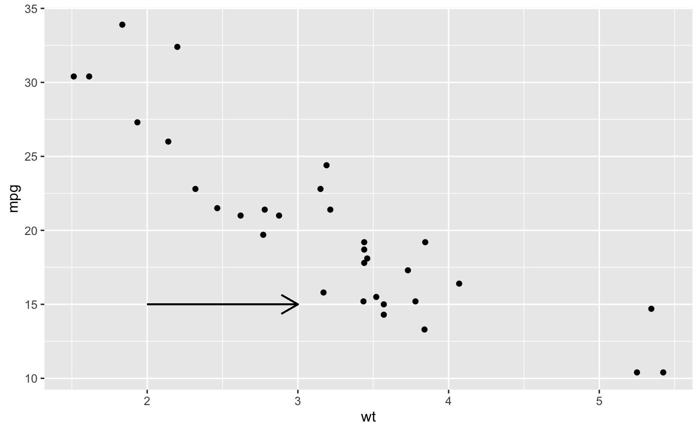
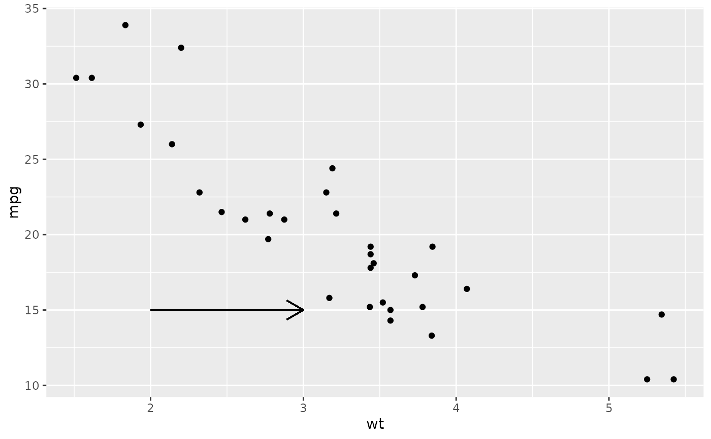

R/aes-position.r
aes_position.RdThis page demonstrates the usage of a sub-group of aesthetics; x, y, xmin, xmax, ymin, ymax, xend, and yend.
# Generate data: means and standard errors of means for prices # for each type of cut dmod <- lm(price ~ cut, data = diamonds) cuts <- data.frame(cut = unique(diamonds$cut), predict(dmod, data.frame(cut = unique(diamonds$cut)), se = TRUE)[c("fit", "se.fit")]) se <- ggplot(cuts, aes(x = cut, y = fit, ymin = fit - se.fit, ymax = fit + se.fit, colour = cut)) se + geom_pointrange()# Using annotate p <- ggplot(mtcars, aes(wt, mpg)) + geom_point() p + annotate("rect", xmin = 2, xmax = 3.5, ymin = 2, ymax = 25, fill = "dark grey", alpha = .5)# Geom_segment examples p + geom_segment(aes(x = 2, y = 15, xend = 2, yend = 25), arrow = arrow(length = unit(0.5, "cm")))p + geom_segment(aes(x = 5, y = 30, xend = 3.5, yend = 25), arrow = arrow(length = unit(0.5, "cm")))# You can also use geom_segment to recreate plot(type = "h") : counts <- as.data.frame(table(x = rpois(100, 5))) counts$x <- as.numeric(as.character(counts$x)) with(counts, plot(x, Freq, type = "h", lwd = 10))